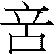

21 噬嗑卦 火雷噬嗑
噬嗑，亨，利用獄。初九，屨校滅趾，无咎。六二，噬膚，滅鼻，无咎。六三，噬腊肉，遇毒。小吝无咎。九四，噬乾胏，得金矢，利艱貞吉。六五，噬乾肉，得黃金，貞厲无咎。上九，何校滅耳，凶。
【卦名】
今本：噬嗑 帛書易傳：筮閘、筮蓋 秦簡：筮、筮蓋 清華簡：
「噬嗑」音「適合」，意思為咬東西、吃東西，引申為咬合、磨合。
《彖傳》：「頤中有物，曰噬嗑。」《雜卦傳》：「噬嗑，食也。」噬嗑為吃東西、嘴巴中有東西的意思。
《說文》：「噬，啗也，喙也。」「嗑，多言也。」啗音但，就是吃的意思；喙則是嘴、口的意思。則噬與嗑為兩件事，意指嘴咬東西、吃東西，再加上話很多。另嗑通盍，合的意思。這也是《序卦》說的「嗑者合也」。
秦簡《歸藏》作「筮」，但文中有「筮蓋」一辭。帛書本缺此卦卦名，但經文中噬作筮，與秦簡同，帛書《易之義》作筮閘，《繫辭》作筮蓋。皆大致可視為噬嗑之假借。
清華簡作，王寧認為這是「噬」的本字，噬與同，卜辭中音義皆作「誓」，詳說可參考〈從「丂」說到「噬」〉一文。這個看法對於解釋噬嗑卦相當有啟發性，可以説明為何噬嗑卦為何既是咬食又兼及刑罰。从口從䇂，䇂是罪的意思，古文形構為干上，即犯上之義。從口從䇂，犯「口罪」之義，可能意指說錯話，或者是飲食上僭越禮法，符合噬嗑卦經文所談典故。
《序卦》：「可觀而後有所合，故受之以噬嗑，嗑者合也。物不可以苟合而已，故受之以賁，賁者飾也。」依《序卦》，噬嗑意思為噬而合，合為合於禮法的意思。陳鼓應認為噬者決也，噬嗑為決之而使之合，即刑法之執行，此說可供參考。
【卦義】
噬嗑的字面意思是吃東西，經文談的可能是飲食違禮而遭受懲罰的故事，因此卦義引申也有懲奸除惡之義。
噬嗑卦談的是關於刑罰的使用，也是卦辭說的「利用獄也」，《象傳》說的「先王以明罰敕法」。使用刑罰是希望達到小懲大戒的功效，此《繫辭傳》引孔子所說的：「小人不恥不仁，不畏不義，不見利不勸，不威不懲，小懲而大誡，此小人之福也。易曰『屨校滅趾，无咎』，此之謂也。」
噬嗑卦是一個象形卦，有如頤中有一食物，像嘴巴要咬食的樣子，因此名為噬嗑。噬嗑即「咬合」（吃東西）的意思。雖有所獲得（口中含物），但要提防所得到的東西是否有害。必須謹慎辨明是非，不要因為飲食不當而惹禍上身：或遭受刑罰，或吃到傷身之毒物。
至於卦名意思為咬東西，卦義與經文怎麼會扯上刑罰？有兩種可能的解釋。王弼：「噬，齧也。齧者，刑克之謂也。」依王弼說法，噬為齧，可用以指涉刑克。那麼噬可視為一種雙關語或隱寓，齧物可類比於君王以刑罰來迫使百姓合於禮。古代易學家說法或有些小異，但大抵持論皆不離王弼框架。現代學者另提出一看法，認為噬嗑講的是吃肉違禮而受到刑罰的故事，此取六二「噬膚滅鼻」之義。兩說於卦義經文皆可通。
卦象下動而上明，為動以明之義，行動要理性而明理。又內為雷，外為電，雷威猛而電照明。內有積極行動之性格，外又能以聰明鑑察事理。
傳統易學家皆以坎為用獄，如虞翻注：「坎為獄。」李鼎祚：「坎為法律，又為刑獄。」實則用獄之象應該是離卦而來，坎為法律才是。用獄是法網，將人繩之於法，這與法律是不一樣的意思。法律本身所通的應該是正義、公平之義，《爾雅》所說的：「坎，律，銓也。」所以蒙卦《彖傳》說「蒙以養正」，師卦《彖傳》說「師，眾也，貞，正也，能以眾正，可以王矣。」師卦上坤為眾，下坎為正，所以說「以眾正」。
因離古字即從禽從隹，像網子捕獲小鳥。離與羅形近義同而通用，帛本卦名離作羅，即取其網羅之義。因此離卦取象有法網的意思，即將犯人擒獲，繩之於法。而震則有執行之義，因此離遇到震卦即是執法用獄之象。這種卦象可能與古代占候有關，古人怕雷，聽雷聲則有所恐懼，所以震卦說「震來虩虩」，象傳說「洊雷震，君子以恐懼脩省」。而電或許被聯想為老天開眼，因此雷電齊發時就聯想到上天開眼又發威，有罪者當繩之於法。此京房《對災異》所說的：「雷電俱出，或先鳴而後電者，此謂執法貪苛。」
上離下震的噬嗑卦卦辭說「利用獄」，《象傳》說「明罰敕法」。而上震下離的豐卦《象傳》說「君子以折獄致刑」。此外由離與艮組成的賁卦《象傳》說「君子以明庶政，无敢折獄」，旅卦《象傳》說「君子以明慎用刑而不留獄」。中孚大象像離，《象傳》說「君子以議獄緩死」。這些都是以離為執法用獄之象的證據。
卦序上噬嗑是繼觀卦而來，《序卦傳》：「可觀而後有所合，故受之以噬嗑，嗑者合也。物不可以苟合而已，故受之以賁，賁者飾也。」觀卦卦象風行地上，為命令行於邦國，噬嗑則為使用刑罰，防治犯罪，執法之義，乃使用刑罰使百姓合於法治。
噬嗑卦可能談的是因為飲食失當而遭受刑罰或意外的故事，卦辭開宗明義就說「利用獄」，初爻講的是夾腳趾懲戒初犯，六二爻講因為吃軟嫩膚肉而遭受割鼻的處罰，到上爻則是刑罰於首，頸荷枷具以至於喪失耳朵。因此若問官司，得此卦很可能有牢獄刑罰之災。
宋明儒則多數認為，初、上兩爻講的是受刑，而二至五四爻則是用刑。如朱熹：「初、上无位，為受刑之象。中四爻為用刑之象。」
一般而言，得噬嗑卦謀事及求財皆可得，但在過程當中都會有些棘手的事要處理，總得經過困難的磨合過程之後才能達成。而且還得小心因為小小的獲得反而連帶而來的禍害，特別是可能因此而觸法，帶來牢獄之災。
《彖傳》說「頤中有物」，此物當指互體坎卦，並取牛小排（或羊小排...）之象，因牛小排外柔內剛。故六爻除初、上分別取施用刑具之義，中間六爻皆與吃牛小排有關。九四為中間的骨頭，因此說「噬乾胏」，胏為骨邊肉。九四兩邊的六五和六三都是牛小排外的肉，所以兩爻都說吃肉。六五說「噬乾肉」，六三說「噬腊肉」。至六二為肉之外，即膚，因此說「噬膚」。
噬嗑亨，利用獄。
- 彖曰：頤中有物，曰噬嗑。噬嗑而亨，剛柔分，動而明，雷電合而章，柔得中而上行，雖不當位，利用獄也。
- 象曰：雷電，噬嗑，先王以明罰勑法。
- 《繫辭傳》：「日中為市，致天下之民，聚天下之貨，交易而退，各得其所，蓋取諸噬嗑。」
- 序卦：可觀而後有所合，故受之以噬嗑，嗑者合也。物不可以苟合而已，故受之以賁，賁者飾也。
- 雜卦：噬嗑，食也。
【今解】
噬嗑而能夠亨通，利於使用刑罰之事。
噬嗑之所以能亨通，是因為威與明並濟，剛柔分明，主動而聰明（內震動外離明），要有明察秋毫的能力再加上執行的魄力才能夠亨通。
獄指的是刑罰之事，這是最難決斷者，一定要果決而聰明者才能夠勝任。利用獄，隱喻所遇到的是棘手而艱難的事，若能剛柔並用，明察秋毫，則能夠處理得宜。
王弼：「有間與過，齧而合之，所以通也。刑克以通，獄之利也。」孔穎達：「物在於口，則隔其上下，若齧去其物，上下乃合而得亨也。此卦之名，假借口象以為義，以喻刑法也。」
【字義】
利用獄：宜於行使與刑罰相關的官司。古文中的獄有兩種意思，一是現今所說的監獄、監牢。《玉篇》：「二王始有獄，殷曰羑里，周曰囹圄。」這也是《周禮》中的圜土。二是論人有罪與否的官司。《周禮》「凡萬民之不服教而有獄訟者」。鄭玄注：「爭罪曰獄，爭財曰訟。」賈公彥疏：「《秋官．大司寇》云『以兩造禁民訟，以兩劑禁民獄』。獄訟相對，故獄為爭罪，訟為爭財。若獄訟不相對，則爭財亦為獄，其義具在《秋官》釋之。」獄和訟相對而言時，獄為爭辨人之有罪無罪，訟則是官於財產之爭辨。噬嗑卦的「利用獄」所指的應該是官司，且主要是與論罪有關的，但也兼及爭財的訴訟。《周易》中關於財產爭辨者主要為訟卦之範疇，而關於罪刑之事，則是噬嗑卦的議題。但正如賈公彥所言，如果獄訟不對舉而言時，獄也兼及爭財，此或許就是為何出現九四「噬乾胏，得金矢」，因「金矢」所指可能是爭財之事。
雷電：《象傳》「雷電」依程頤說法認為有誤，可能應當做「電雷」：「象無倒置者，疑此文互也。」朱熹支持這個看法：「雷電當作電雷。」宋儒張清子：「蔡邕石經本作電雷。」然而《彖傳》說「雷電合而章」，應作「雷電」無誤。其次，程頤說「象無倒置者」也不正確，泰卦《象傳》說「天地交泰」就是程頤所謂的「倒置」，其餘卦例，先講下卦再講上卦者還有十五卦，如比卦地上有水，臨卦澤上有地，復卦雷在地中，大畜天在山中，咸山上有澤，明夷明入地中，蹇山上有水，井木上有水，鼎木上有火，漸山上有木，歸妹澤上有雷，旅卦山上有火，節卦澤上有水，中孚澤上有風，小過山上有雷，凡此都是先講下卦再講上卦。《大象傳》首句都是講上下二體卦象，但表達上下二體時，的確主要都是以先上後下的體例，但八純卦並無上下之別之外，合此共有十七卦先講下卦再講上卦。可能在古代「雷電」已成習慣用語，因此不講「電雷」。
明罰勑法：彰明小罪的懲罰，以整飭刑法。罰為小罪，勑通敕、飭，整治之義。《廣韻》：「同徠。」鄭玄：「勑，猶理也。」噬嗑卦旨在表明以刑罰為教，達小懲大戒之效。《說文》：「罰，辠之小者。」震卦古卦名為來、徠。上離為明為刑罰，下震為徠，因此上下體為明罰勑（徠）法之象。
可觀而後有所合，故受之以噬嗑：崔憬：「言可觀政於人，則有所合於刑矣，故曰可觀而有所合。」
噬嗑，食也：噬嗑為頤中有物，為口中咬物，吃食之象。相對的，頤卦則是嘴巴空空，必需自求口食。
初九，屨校滅趾，无咎。
- 象曰：屨校滅趾，不行也。
- 《繫辭下》：子曰：小人不恥不仁，不畏不義，不見利不勸，不威不懲，小懲而大誡，此小人之福也。易曰「屨校滅趾，无咎」，此之謂也。
【今解】
受刑而斷了腳趾，沒有罪咎。
腳被戴上刑具而斷了腳趾，一開始就遭受小懲，不會繼續犯下殺身的大錯，所以沒有罪咎。
初九爻位處最卑微之位，又居震初，與上無應，位卑而妄動之象。在行動之初就因犯錯而受到刑罰，因為小事受到懲罰而免於更大的過錯，所以何嘗不是因禍得福，能改過則可免於後悔。
《繫辭傳》引孔子以「小懲而大戒」詮釋這段經文。
孔子說，小人對於不仁的事不會感到羞恥，從事不義之事也不會有任何恐懼，可謂膽大妄為。沒讓他看到利益是無法說動他，不以威權手段就無法懲戒於他。所以，給他小小的懲罰，讓他心中有很大的警誡而不敢妄為，這反而是小人的福氣。周易所說的「屨校滅趾，无咎」就是這個意思。
【字義】
屨校滅趾：腳穿上刑具而喪失腳趾。行動之初就受到小懲罰，因而心生警戒，不再犯錯。因遭受刑罰而喪失了腳趾，聽來相當殘忍，可能認為是極刑，因此古代易學家對此有所爭議。屨，音據，穿戴，原為穿鞋的意思。校，刑具。屨校，穿戴刑具。干寶則認為「屨校」是刑具，「屨校，貫械也」。滅為消滅，喪失。趾為腳趾之意，六爻類比於人體，初爻為趾或拇。趾除了是人的腳趾外，也象徵行動之初，滅其趾則隱喻在行動之初就因為行為有差錯而受到懲罰，因為受到懲罰而適可而止，不至於再犯下大錯，因此爻辭說「無咎」。另一說認為滅趾只是因為配戴刑具而看不到腳趾，而不是喪失腳趾，因噬嗑講的是輕罰，不是重刑，而滅了腳趾為重刑。郭雍曰：「初上滅字，或以為刑，獨孔氏訓沒。屨校，桎其足，桎大而滅趾。何校，械其首，械大而沒耳也。或以滅耳為刵，滅鼻為劓，滅趾為剕，《書》註劓刵輕刑，《呂刑》剕辟為重，故漢斬趾同於棄市。方初九小刑，固不當斷趾。上九罪大，復不當輕刑。以是知三者言滅，皆非刑也。」
六二，噬膚滅鼻，无咎。
象曰：噬膚滅鼻，乘剛也。
【今解】
吃肉犯法而遭受割鼻的刑罰，沒有罪咎。
噬膚滅鼻也可指吃到好吃的膚肉以致於鼻子埋在器皿中，朱熹認為這是比喻所斷之案件簡單容易。但或可能用以形容人吃相難看。
【字義】
噬膚：有兩種解釋。一、受到肌膚被割的刑罰。王弼：「噬，齧也。齧者，刑克之謂也。處中得位，所刑者當，故曰噬膚也。乘剛而刑，未盡順道，噬過其分，故滅鼻也。刑得所疾，故雖滅鼻而无咎也。膚者，柔脆之物也。」程頤：「噬齧人之肌膚，為易入也。」因此「噬膚」與「滅鼻」同為刑罰。二、吃到柔脆好吃的膚肉。膚是帶脆皮，不帶骨，外脆內嫩而多汁的肉，也是祭祀中所用的「膚鼎」。朱熹：「祭有膚鼎，蓋肉之柔脆，噬而易嗑者。」「六二中正，故其所治如噬膚之易。」此以膚之容易入口，隱喻事情之容易處理。來知德：「膚者，肉外皮也。」又說：「祭有膚鼎，蓋柔脆而無骨，噬而易嗑者也。」睽卦六五有「厥宗噬膚」，象傳解釋說「往有慶也」（前往有喜慶），因此「噬膚」可解釋作吃好吃的膚肉，比喻所斷之案件簡單容易。
滅鼻：受到割鼻之刑。另一看法認為，滅為沒，埋沒之意，滅鼻只是因為吃肉吃到整個臉埋了進去看不到鼻子，形容吃相難看。來知德：「滅字與滅趾滅耳同例，即《朱子語錄》所謂『噬膚而沒其鼻于器中』是也，言噬易嗑，而深噬之也。」
六三，噬腊肉，遇毒，小吝，无咎。
象曰：遇毒，位不當也。
【今解】
吃到乾硬的腊肉，有陳年臭味的肥脂，小小悔恨，沒有罪咎。
此言腊肉中有毒而誤食。不過只是小小的過錯，不致於有太大的罪咎。
此或比喻遇到陳久而棘手的老案件，很難處理。毒隱喻人之積怨，心生不服。
王弼：「噬以喻刑人，腊以喻不服，毒以喻怨生。」程頤：「用刑而人不服，反致怨傷，是可鄙吝也。」陳夢雷：「治久年疑獄而人不服者也。」
【字義】
腊肉：腊，音昔。腊肉，乾肉。《周禮》：「腊人掌乾肉，凡田獸之脯、腊、膴、胖之事。」鄭玄注：「大物解肆乾之，謂之乾肉，若今涼州烏翅矣。薄折曰脯，棰之而施薑桂曰鍛脩。腊，小物全乾。」六五「噬乾肉」，腊肉也是乾肉，但兩種乾肉不一樣。六五所吃的乾肉是大的獸類切下的大塊肉做成的，而腊肉則是小動物，如兔子整隻晾乾做成的。朱熹《本義》：「腊肉，謂獸腊，全體骨而為之者，堅韌之物也。」朱震：「鳥獸全體乾之為腊，噬之最難者也。」
毒：有兩種解釋，一是與現今毒物的毒同義。如虞翻說「坎為毒」、「毒謂矢毒也」，這也是《周禮．跡人》所說的「禁毒矢射」的矢毒。多數易學家則都支持第二種解釋，毒為腊肉裡的陳年臭味，或是有陳年臭味的肥肉，是腊肉中讓人討厭的部份。《國語》：「高位實疾顛，厚味實蜡毒。」《隱義》：「蜡，久也，久酒有毒。」腊肉的腊有二說，一取「夕」義，經一夜之晾乾。二取「久」義，久放而乾。《周禮》「腊人」賈公彥疏：「乾曰腊，朝曝，於夕乃乾，故云腊之言夕。或作久字，久乃乾成，義亦通也。」如來知德：「毒者腊肉之陳久太肥者也。」
【占例】
《三國志‧管輅傳》及所引《管輅別傳》記載，管輅族兄孝國住在厈丘，管輅前去追隨他，和兩位來訪的客人會面。客人離去之後，管輅告訴孝國：｢這兩人，天庭和口耳之間帶有凶氣，災異變化都已經出現了，兩人的靈魂已經沒有安宅。靈魂將流放到海裡，屍骨歸返家中，沒多久兩人應該會死在一起。｣
又說：「厚味腊毒，夭精幽夕，坎為棺槨，兌為喪車。」
「厚味腊毒」典故出自噬嗑卦六三「噬腊肉，遇毒。腊，乾肉。」管輅言下之意，兩人會在飲食之後，乘車遇禍而死。
兩人回家之後幾十天，喝醉酒，晚上一起坐車回家，結果拉車的牛受到驚嚇掉到漳河裡去，兩人一起淹死了。
推論管輅此卦可能是噬嗑之離，「厚味腊毒」為噬嗑六三爻辭，「夭精幽夕」似於離九三「日昃之離」、「大耋之嗟凶」。「坎為棺槨」取互體坎象，「兌為喪車」取六三爻變之後的互體之象。
九四，噬乾胏，得金矢，利艱貞，吉。
象曰：利艱貞吉，未光也。
【今解】
吃到乾硬而帶骨的肉，得到金屬箭頭的幫助，若能夠辛苦而守正則吉。
吃到了骨邊的乾肉，此乾肉雖然味道最為豐富但卻也是很難處理之物；然而有了金屬做的箭頭可以切肉。現在雖艱辛坎坷，其中滋味也是無窮，吉。
比喻事情艱難、錯綜複雜而不好應付，但若能努力辛苦好好處理則吉。
【字義】
乾胏：乾硬不好入口又帶骨的肉干。胏，音子，通解認為是帶骨的肉。馬融：「有骨謂之胏。」朱熹：「胏，肉之帶骨者，與胾通。」胏《子夏易傳》作脯。《周禮》：「腊人掌乾肉，凡田獸之脯、腊、膴、胖之事。」鄭玄注：「大物解肆乾之，謂之乾肉，若今涼州烏翅矣。薄折曰脯，棰之而施薑桂曰鍛脩。腊，小物全乾。」「薄折」的肉為脯，脯只是簡單用鹽把切成的肉晾乾，若是再經過棰鍛以及添加香料的加工則成脩。《說文》引作：「食所遺也，从肉仕聲。易曰：噬乾。」 鄭玄：「胏，簣也。」未知其解。
金矢：金為金屬，鋼硬之物，矢為箭頭，為一直線往前行的物體。得金矢比喻得到解決問題的工具，又比喻剛直。楊萬理《誠齋易傳》：「得金矢以鑽乾胏，則骨去而肉可噬。」意思說，金矢可用來切鑽骨上的肉。另金矢也有比喻人的德性剛健而正直之意謂。現代學者多以金矢為打獵遺留在獵物身體內的箭頭，言吃乾肉而咬到殘留的箭頭。朱熹引《周禮》：「獄訟，入鈞金束矢而後聽之。」《周禮》：「以兩劑禁民獄，入鈞金，三日乃致於朝，然後聽之。」鄭玄注：｢必入金者，取其堅也。三十斤曰鈞。」「以兩造禁民訟，入束矢於朝，然後聽之。」注：「必入矢者，取其直也。注：古者一弓百矢，束矢其百個與？」古代為了減少訴訟，如果是與定人罪名有關的官司稱獄，規定雙方要帶書契，同時帶到「鈞金」，即三十斤的銅，以象徵意志堅定。如果是關於財產的紛爭稱訟，除了「兩造」，也就是雙方要親自到場，還要帶著「束矢」至朝廷，以象徵正直。束矢就是一百隻箭。俞琰說法和朱熹相同：「《周禮‧秋官‧大司寇》：以兩造禁民訟，入束矢於朝，然後聽之。以兩劑禁民獄，入鈞金三日乃致于朝，然後聽之。金取其堅，矢取其直。得金矢則得其情，而無情者不得盡其辭也。」《尚書‧舜典》：「金作贖刑。」
六五，噬乾肉，得黃金。貞厲，无咎。
象曰：貞厲无咎，得當也。
【今解】
吃到乾肉，得到黃金，堅貞而艱苦則可得無咎。
乾肉比膚肉還要乾硬，但又不像乾胏那般帶骨而麻煩，有點難咬但又不是太難，只須多加咀嚼就可入口。此比喻事情有點困難又不會太困難。但也因為不難不易而更容易因此讓人心生怠慢而有所疏忽，所以斷案者必須要符合「黃金」之德，黃象徵中庸，金為陽剛堅硬，也就是秉持公正而剛正嚴明，同時還要貞定而艱苦，如此才能避免犯錯而後悔。
【字義】
黃金：有兩種解釋，一就是現今認為的黃金，而黃也有中庸之意，因為黃為中色，六五為上卦的中爻。俞琰則認為黃金是贖金的意思：「得黃金謂得罰贖之金。《書‧舜典》：金作贖刑是也。」此說亦通，因為噬嗑卦所論多與刑罰有關聯。朱熹則認為金是古代獄訟時所上繳的「鈞金」，其說詳見於六四爻的「金矢」。
上九，何校滅耳，凶。
象曰：何校滅耳，聰不明也。
《繫辭下》：「善不積不足以成名，惡不積不足以滅身。小人以小善為无益而弗為也，以小惡為无傷而弗去也。故惡積而不可掩，罪大而不可解。《易》曰：『何校滅耳凶。』」
【今解】
罪刑重大而導致枷鎖套到頭上，耳朵被割，凶。
滅耳象徵失去聰明，所以《象傳》說「聰不明也」。
【字義】
何：或作「荷」，解作「負」，配戴的意思。校為刑具，負校就是配戴刑具。另孔穎達將何解作「檐何」，那麼何與校同樣都是刑具。何校滅耳，指的是因為配戴刑具以至於喪失了耳朵，意謂頸部被施以刑具。或者配戴刑具之後被施以割耳之刑。大畜上九「何天之衢」。
【彖傳注】
頤中有物，曰噬嗑。噬嗑而亨，剛柔分，動而明，雷電合而章，柔得中而上行，雖不當位，利用獄也。
頤中有物，曰噬嗑：此以六爻所構成之卦象解釋噬嗑卦。噬嗑為頤  中有物之象。此「物」有兩種解釋，一是九四陽爻，陽為實。二是以互體坎為物。賁卦看來也像是頤中有物，但為何噬嗑講頤中有物？因賁卦的頤止而不能動，而噬嗑卦下震可動，可動才能咬合。俞琰說：「凡噬者必下動，賁無震，故不得為噬嗑也。」仔細檢驗六爻，「物」當以坎為佳。坎為外柔內剛之物，於食物像是丁骨排，中間有骨，外有肉。九四即丁骨排中間的骨頭，因此說「噬乾胏」，胏為骨邊肉。九四之外的六五及六三都是肉，肉之外為六二則為膚。
中有物之象。此「物」有兩種解釋，一是九四陽爻，陽為實。二是以互體坎為物。賁卦看來也像是頤中有物，但為何噬嗑講頤中有物？因賁卦的頤止而不能動，而噬嗑卦下震可動，可動才能咬合。俞琰說：「凡噬者必下動，賁無震，故不得為噬嗑也。」仔細檢驗六爻，「物」當以坎為佳。坎為外柔內剛之物，於食物像是丁骨排，中間有骨，外有肉。九四即丁骨排中間的骨頭，因此說「噬乾胏」，胏為骨邊肉。九四之外的六五及六三都是肉，肉之外為六二則為膚。
噬嗑而亨，剛柔分，動而明：剛柔分，以卦變解釋經文。噬嗑卦由否卦卦變而來，否卦九五降初，初六升至五，為剛柔分。動而明，上下二體卦德解釋卦義，下震為動，上離為明，為動而明之象。
雷電合而章：以上下二體卦象解釋卦義。下震為雷，上離為電，雷電合而章之象。章，美。
柔得中而上行，雖不當位，利用獄也：以主爻六五解釋經文。否卦初六上行至五而得中，雖然不當位，但柔中，因此利用刑獄。
勘误
“屨校”文中多處誤為“履校”，請校正。
聯結不通
詳說可參考〈從「丂」說到「噬」〉一文
“束矢九是一百隻箭”應為“就是”。
“九是一百隻箭”應為“就是”。
疑為有誤
「雷電：⋯ 頤卦澤上有地⋯ 」 應為「臨卦澤上有地」